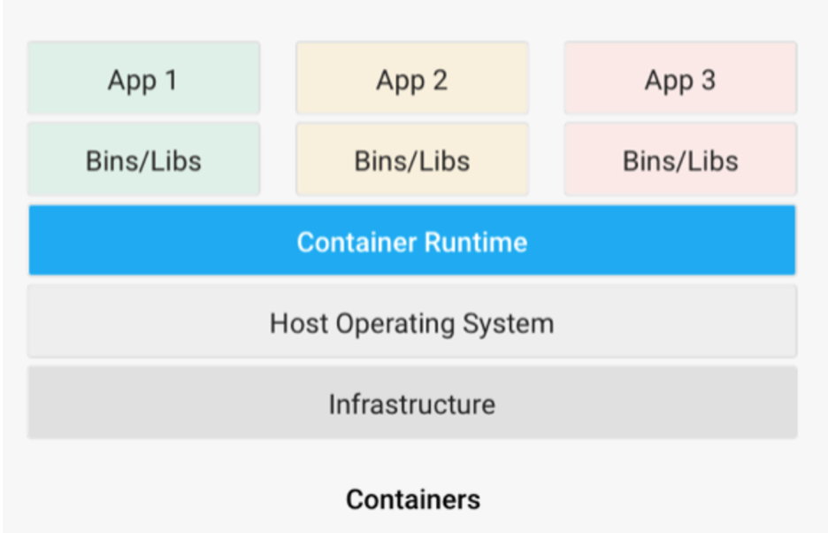

Containerization was developed to solve many of the problems of virtualization. The purpose of the containers is to encapsulate an application and its dependencies within its own environment. This allows them to run in isolation while they are using the same system resources and the same operating system. Since the resources are not wasted on running separate operating systems tasks, containerization allows for a much quicker, lightweight deployment of applications. Each container image could be only a few megabytes in size, making it easier to share, migrate, and move.
Apps and their dependencies sit in containers on top of a ‘container runtime environment’ which can work on a host operating system and the infrastructure of choice.
A container engine can easily manage large numbers of containers so we can create, add, and remove containers as needed. The maintenance of containers is also simplified since we need to update, patch, and fix bugs on only one operating system. It is also worth noting that containers decrease hardware costs since the allocation of multiple applications to the same hardware improves hardware utilization.